Action recognition of earthmoving excavators based on sequential pattern analysis of visual features and operation cycles
Jinwoo Kim, Seokho Chi · Automation in Construction
한줄 요약 — 굴착기의 단일 프레임 외형만 분류하지 않고 CNN이 추출한 시각 특징의 시간 변화와 굴착→운반→배출→복귀로 이어지는 작업주기를 두 개의 LSTM 단계에서 연속 모델링해, 가림과 유사 자세에서도 여섯 행동을 안정적으로 판정하고 생산성 분석용 행동 시간까지 추정한 현장 영상 인식 방법이다.
1.연구 배경 및 동기
한 장의 자세가 아니라 굴착 사이클 전체를 읽기
굴착기의 굴착, 운반, 배출, 복귀 선회, 이동, 정지는 사이클 시간과 직접 작업률을 계산하는 기본 상태다. 그러나 단일 영상에서 운반과 복귀 선회는 본체가 회전한다는 점에서 유사하고, 굴착과 정지는 버킷이 가려지면 외형 차이가 작다. 현장 영상에는 조명 변화, 여러 장비의 가림, 시점과 자세 변화가 동시에 나타나므로 한 프레임의 공간 특징만으로는 연속 작업을 안정적으로 분류하기 어렵다.
숙련 관찰자는 현재 자세만 보지 않고 직전 행동과 다음에 올 가능성이 높은 행동을 함께 고려한다. 굴착기는 보통 굴착→운반→배출→복귀 선회를 반복하고, 배출 뒤에는 위치를 옮기기도 하며, 준비 굴착 뒤 트럭을 기다리며 정지할 수도 있다. 논문은 이 도메인 지식을 시각 특징의 시간 변화와 작업주기라는 두 수준의 순차 패턴으로 나누고 CNN과 이중 LSTM 구조에 반영했다.
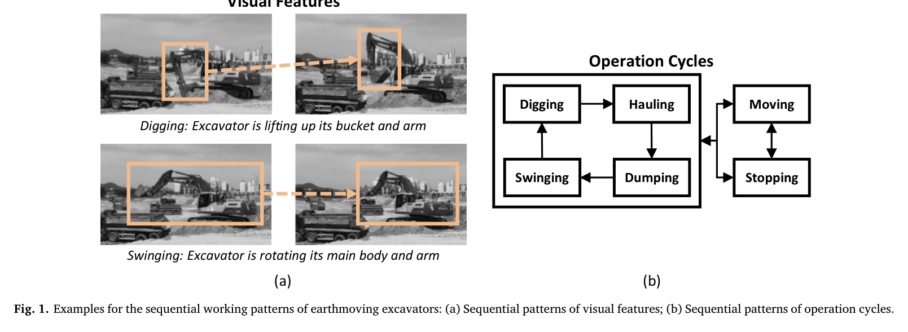
원문 Figure 1 · PDF p.2 — Fig. 1. Examples for the sequential working patterns of earthmoving excavators: (a) Sequential patterns of visual features; (b) Sequential patterns of operation cycles.
선행 연구의 한계
단일 프레임 CNN은 운반과 복귀 선회처럼 외형이 비슷한 행동을 구별하기 어렵다.
기존 시공간 특징·SVM 방식은 최신 심층 특징 표현과 장거리 작업 순서를 충분히 활용하지 못했다.
인간 행동용 장면 단위 모델을 그대로 적용하면 복잡한 건설현장에서 여러 장비의 행동이 섞인다.
작업주기를 사후 규칙으로만 처리하면 가림과 짧은 오분류에 대한 데이터 기반 보정이 제한된다.
이 연구의 기여
굴착기 순차 패턴을 시각 특징 변화와 작업주기 전이라는 두 계층으로 명확히 정의했다.
Faster R-CNN 검출, TLD 추적, CNN-DLSTM 행동 인식을 연결한 객체별 현장 영상 파이프라인을 개발했다.
첫 LSTM이 시각 특징 시퀀스를, 둘째 LSTM이 잠정 행동 시퀀스를 학습하도록 분리해 작업주기 문맥을 반영했다.
CNN, CNN-LSTM, CNN-DLSTM을 동일한 실제 현장 데이터에서 비교해 각 순차 계층의 기여를 정량화했다.
2.방법론 및 시스템 구성
입력 현장 영상을 프레임으로 나눈 뒤 Faster R-CNN이 굴착기 바운딩박스와 위치를 검출한다. 네 가지 크기와 세 가지 종횡비로 총 12개 앵커를 사용하고, 스케일·회전·잡음·평행이동·수평 및 수직 반전으로 학습 영상을 증강한다. 큰 1280×720 입력의 계산량을 줄이기 위해 특징맵 생성 과정에 max-pooling을 추가했다.
검출 결과는 TLD의 검출기·추적기 기능 통합과 온라인 템플릿 학습으로 장비 ID별 시퀀스로 연결된다. 각 바운딩박스는 10개 합성곱층과 5개 max-pooling층의 CNN을 지나 시각 특징이 되며, 첫 번째 LSTM이 자세와 형상 변화의 순서를 분석해 잠정 행동을 출력한다. 두 번째 LSTM은 최근 N프레임의 잠정 행동을 one-hot 시퀀스로 받아 굴착 사이클에 맞지 않는 전이와 지나치게 짧은 상태를 보정한다.
처리 파이프라인
1
Faster R-CNN 굴착기 검출
각 프레임에서 굴착기 후보 영역과 신뢰도를 얻고 박스 회귀로 위치를 보정한다. 다양한 크기·종횡비 앵커와 데이터 증강으로 현장 거리·시점·조명 변화를 학습한다.
2
TLD 장비별 시퀀스 구성
검출 결과를 프레임 간 연결해 장비 ID와 궤적을 만든다. 검출기는 급격한 변화와 재등장을, 추적기는 점진적인 외형 변화를 담당하며 온라인 템플릿 학습으로 대상별 검출기를 보강한다.
3
CNN 시각 특징 추출
추적 박스마다 굴착기 가장자리, 버킷과 본체의 기하관계 같은 표현을 추출한다. 첫 층은 7×7 필터, 나머지는 3×3 필터와 ReLU를 사용한다.
4
첫 LSTM의 시각 시퀀스 판정
이중 적층 LSTM이 버킷 상승·하강과 본체 회전처럼 연속 프레임에서 드러나는 동작을 기억해 굴착·운반·배출·복귀 선회·이동·정지의 잠정 확률을 출력한다.
5
둘째 LSTM의 작업주기 보정
단일 적층 LSTM이 잠정 행동 열을 읽고 굴착→운반→배출→복귀 선회 등 반복 사이클과 상태 지속시간을 학습한다. 가능성이 낮은 전이나 0.5초 수준의 비현실적 행동을 걸러 최종 행동을 결정한다.
굴착기 시각 특징의 단기 변화와 작업주기의 장기 의존성을 유지하거나 지울 시점을 데이터에서 학습한다.
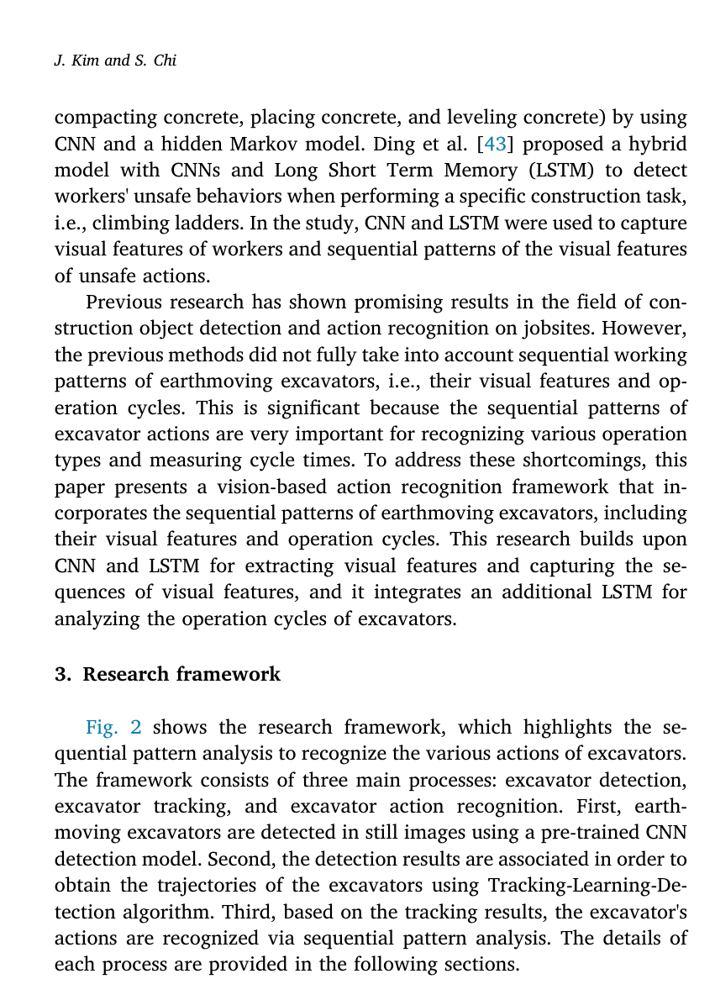
원문 Figure 2 · PDF p.4 — Fig. 2 shows the research framework, which highlights the se- quential pattern analysis to recognize the various actions of excavators. The framework consists of three main processes: excavator detection, excavator tracking, and excavator action recognition. First, earth- moving excavators are detected in still images using a pre-trained CNN detection model. Second, the detection results are associated in order to obtain the trajectories of the excavators using Tracking-Learning-De- tection algorithm. Third, based on the tracking results, the excavator's actions are recognized via sequential pattern analysis. The details of each process are provided in the following sections.
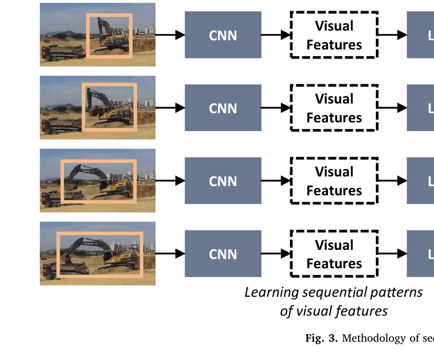
원문 Figure 3 · PDF p.5 — Fig. 3. Methodology of sequential pattern analysis.
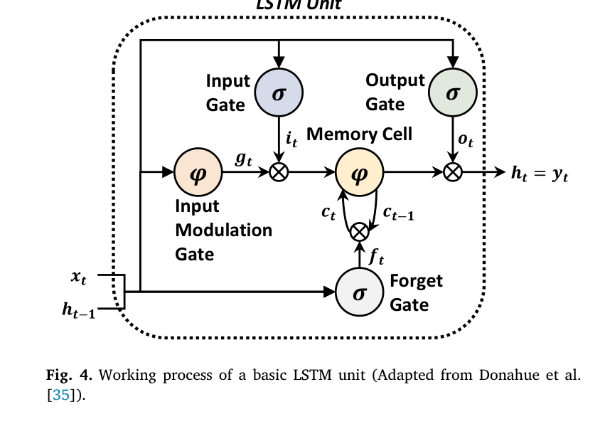
원문 Figure 4 · PDF p.6 — Fig. 4. Working process of a basic LSTM unit (Adapted from Donahue et al. [35]).
3.핵심 기술
두 종류의 순차 패턴을 분리한 CNN-DLSTM
첫 번째 순차 계층은 같은 행동 안에서 외형이 어떻게 변하는지를 본다. 예를 들어 굴착 중 버킷과 암이 올라가고, 운반·복귀 선회 중 본체와 작업기가 일정 방향으로 회전한다. 두 번째 계층은 행동 자체의 순서를 본다. 첫 모델이 가림 때문에 굴착을 정지로 잠정 판정해도, 앞뒤가 복귀 선회와 운반이라면 둘째 LSTM이 복귀 선회→굴착→운반이라는 더 자연스러운 사이클로 수정할 수 있다.
첫 LSTM은 고차원 CNN 특징을 처리하기 위해 이중 적층 구조를 사용한다.
둘째 LSTM은 여섯 행동의 one-hot 잠정 결과를 입력으로 받아 단일 적층으로 구성된다.
시각적 유사성과 작업 순서 모호성을 서로 다른 계층에서 해소한다.
검출·추적을 선행하는 객체 중심 설계
현장 전체를 하나의 장면으로 분류하지 않고 먼저 개별 굴착기를 찾아 ID별로 추적한다. 이는 여러 장비가 좁은 작업구역에서 동시에 움직이는 상황에서 서로 다른 장비의 프레임을 섞지 않기 위한 설계다. Faster R-CNN과 TLD의 결합은 정적 검출 성능과 장시간 시간 연결을 분담한다.
검출 출력은 객체 종류와 위치, 추적 출력은 장비 ID, 행동 모델 출력은 행동 종류로 단계가 명확하다.
검출·추적 실패는 행동 모델에 입력 자체가 사라지는 주요 오류 원인이다.
객체별 시퀀스는 이후 사이클 시간과 개별 장비 생산성 계산에 직접 연결된다.
현장 도메인 지식을 학습 가능한 문맥으로 변환
굴착→운반→배출→복귀 선회, 배출→이동, 굴착·운반→정지 같은 전형적 전이를 단순 if-then 규칙으로 고정하지 않고 LSTM이 학습하도록 했다. 따라서 순서를 활용하면서도 실제 데이터의 변동과 상태 지속시간을 함께 반영할 수 있다.
비현실적인 굴착→복귀 선회→배출 전이를 낮은 확률로 처리한다.
0.5초처럼 지나치게 짧은 굴착 상태를 작업주기 문맥으로 제거할 수 있다.
작업주기 수준의 출력은 사이클 시간과 병목 구간 분석에 적합하다.
4.실험 결과
실험 환경·장비·데이터
일반 광학 카메라와 스마트폰으로 실제 토공 현장의 굴착기 영상을 수집했다.
6대의 고정 카메라를 장비에서 10~50m, 높이 0~15m, 서로 다른 시점에 배치해 가림·조명·자세 변화를 포함했다.
총 72,365프레임, 약 121분, 720×1280 해상도와 10fps의 데이터를 사용했다.
40,000프레임을 학습에, 32,365프레임을 시험에 사용했다.
행동 클래스는 굴착, 운반, 배출, 복귀 선회, 이동, 정지의 여섯 가지다.
실험 프로토콜
순차 패턴을 모두 제거한 CNN, 시각 특징 순서만 사용하는 CNN-LSTM, 시각 특징과 작업주기를 모두 사용하는 CNN-DLSTM을 비교했다.
검출, 추적, 최종 행동 인식의 정밀도와 재현율을 각각 측정했다.
예측 행동별 누적시간을 실제 누적시간과 비교해 작업시간 오차를 계산했다.
부분 가림, 자기 가림, 조명 변화와 여러 카메라 시점에서 연속 행동 판정을 정성 확인했다.
비교 기준
단일 프레임 CNN
시각 특징 시퀀스만 반영한 CNN-LSTM
제안 모델 CNN-DLSTM
평가 지표
검출·추적·행동 인식 정밀도와 재현율
CNN, CNN-LSTM, CNN-DLSTM 간 성능 변화
행동별 시간 추정 오차율
가림과 시점 변화에서의 연속 판정 안정성
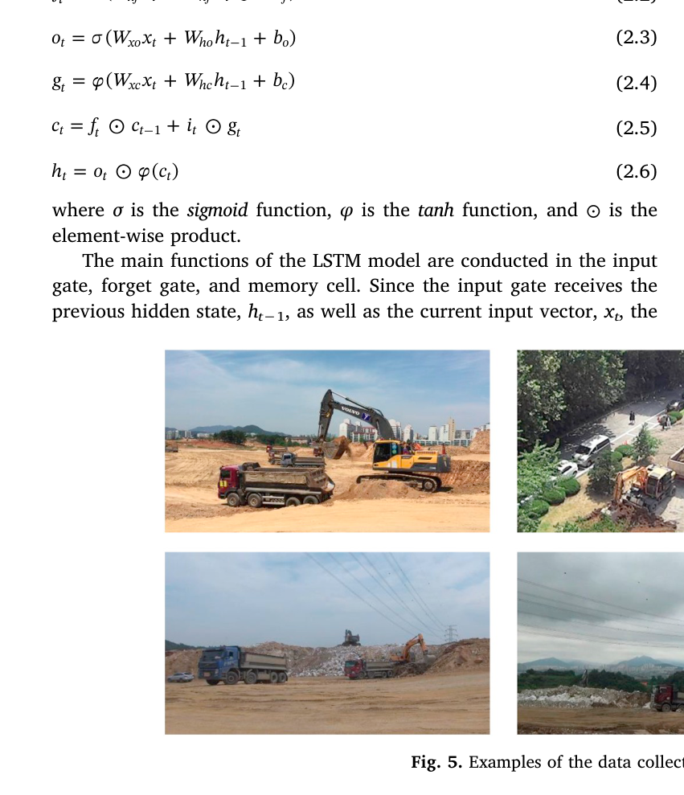
원문 Figure 5 · PDF p.6 — Fig. 5. Examples of the data collected from actual earthmoving sites.
핵심 결과 해석
제안한 CNN-DLSTM은 행동 인식 정밀도 90.9%, 재현율 89.2%를 달성했고, 예측 행동시간의 평균 오차는 약 3.1%였다. 검출과 추적 단계도 각각 96.5%·92.3%, 94.8%·90.4%의 정밀도·재현율을 보였다. 굴착→운반→배출→복귀 선회가 이어지는 구간을 연속 식별했으며, 부분 가림·자기 가림과 조명 변화에서도 행동을 유지했다.
단일 CNN의 정밀도·재현율은 77.5%·71.6%였고, 시각 시퀀스를 추가한 CNN-LSTM은 87.3%·86.1%로 향상됐다. 작업주기 LSTM을 추가하자 다시 90.9%·89.2%로 증가했다. 첫 순차 계층은 단일 프레임에서 비슷한 운반과 복귀 선회를 구별했고, 둘째 계층은 버킷 가림으로 굴착을 정지로 본 잠정 오류를 앞뒤 사이클을 이용해 수정했다.
정량 결과
평가 항목
정량 결과
조건·맥락
원문 근거
CNN-DLSTM 행동 인식 정밀도
90.9%
시각 특징과 작업주기 순차 패턴을 모두 사용
PDF p.7
CNN-DLSTM 행동 인식 재현율
89.2%
여섯 굴착기 행동의 평균
PDF p.7
단일 CNN 성능
정밀도 77.5%, 재현율 71.6%
순차 패턴을 모두 제거한 기준 모델
PDF p.7
CNN-LSTM 성능
정밀도 87.3%, 재현율 86.1%
시각 특징 시퀀스만 사용
PDF p.7
검출 성능
정밀도 96.5%, 재현율 92.3%
Faster R-CNN 굴착기 검출
PDF p.7
추적 성능
정밀도 94.8%, 재현율 90.4%
TLD 장비 추적
PDF p.7
행동시간 추정 오차
약 3.1%
실제 행동 지속시간 대비 예측 누적시간
PDF p.7
실패 사례와 경계조건
운반에서 배출로 전환할 때 본체 회전과 버킷 상승이 동시에 나타나 두 라벨의 경계가 사람에게도 모호하다.
카메라 화면에 수직인 방향으로 굴착기가 이동하면 2차원 외형 변화가 작아 이동을 정지로 오분류한다.
검출 또는 추적이 실패하면 해당 장비의 시퀀스가 끊겨 LSTM에 입력이 전달되지 않는다.
버킷이 본체·트럭·토사에 크게 가려지면 굴착과 정지의 시각 시퀀스가 유사해진다.
둘 이상의 행동이 실제로 겹치는 전환 구간을 단일 라벨로 강제해 라벨 자체의 불확실성이 남는다.
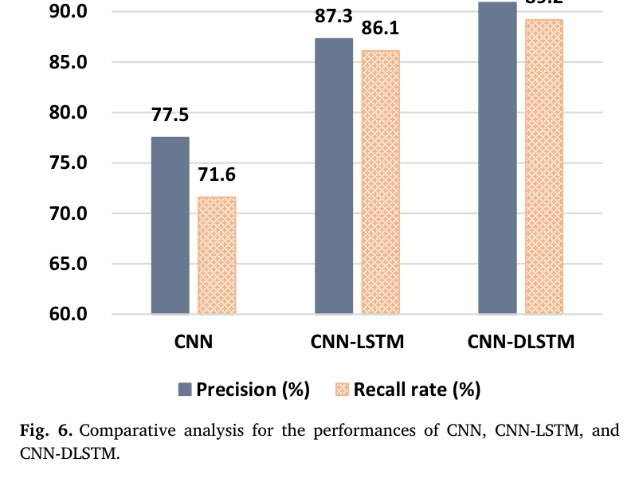
원문 Figure 6 · PDF p.7 — Fig. 6. Comparative analysis for the performances of CNN, CNN-LSTM, and CNN-DLSTM.
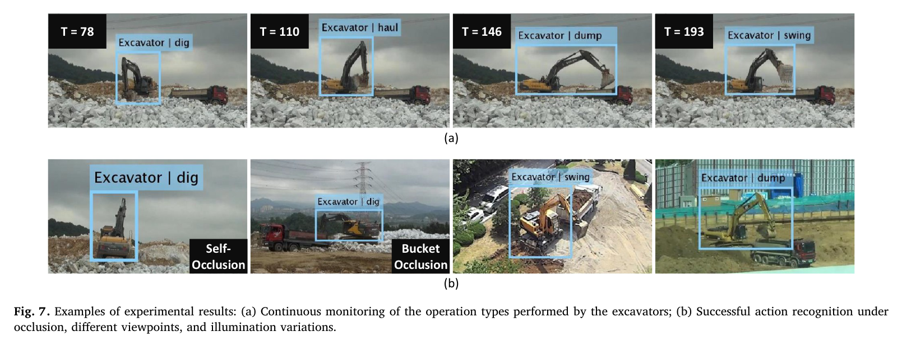
원문 Figure 7 · PDF p.8 — Fig. 7. Examples of experimental results: (a) Continuous monitoring of the operation types performed by the excavators; (b) Successful action recognition under occlusion, different viewpoints, and illumination variations.
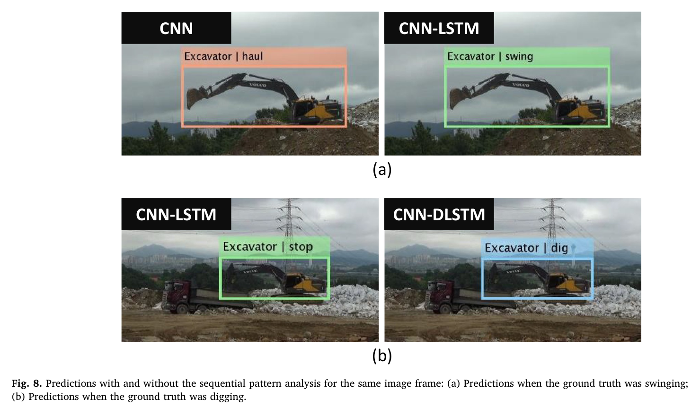
원문 Figure 8 · PDF p.8 — Fig. 8. Predictions with and without the sequential pattern analysis for the same image frame: (a) Predictions when the ground truth was swinging; (b) Predictions when the ground truth was digging.
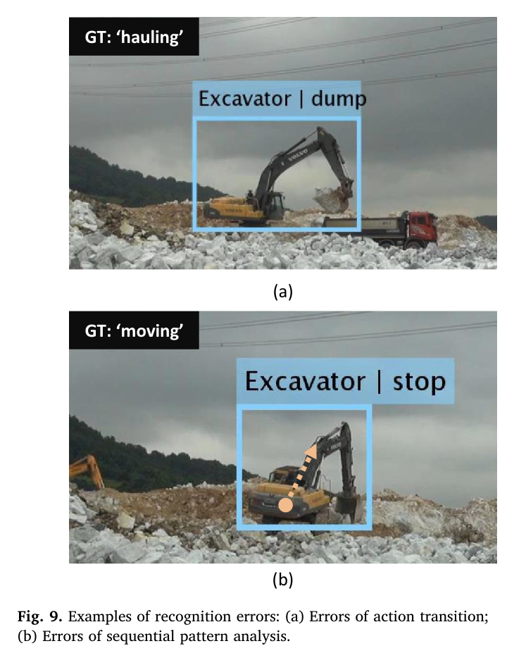
원문 Figure 9 · PDF p.9 — Fig. 9. Examples of recognition errors: (a) Errors of action transition; (b) Errors of sequential pattern analysis.
5.한계 및 향후 연구
현재 한계
72,365프레임의 수작업 라벨과 긴 신경망 학습시간이 필요하다.
행동 전환을 단일 클래스 문제로 정의해 운반·배출처럼 동시에 발생하는 동작을 표현하지 못한다.
단안 2차원 영상만 사용해 카메라 광축 방향 이동과 정지를 구별하기 어렵다.
작업주기가 비정상적으로 변하는 새로운 작업 방식이나 장비에는 학습된 전이 문맥이 편향으로 작용할 수 있다.
검출·추적 실패에 대한 별도 결측 처리나 장기 재식별이 제시되지 않았다.
향후 연구
정확도를 유지하면서 네트워크 복잡도와 학습시간을 줄이는 구조를 탐색한다.
전환 구간을 다중라벨 또는 경계 검출 문제로 다뤄 동시 행동의 모호성을 줄인다.
GPS 등 IoT 센서의 3차원 이동 정보를 융합해 카메라 수직 이동을 보완한다.
자기지도·반지도 학습으로 대규모 프레임 라벨 비용을 낮춘다.
장기 가림 후 재식별과 불확실도 추정을 추가해 생산성 로그의 누락을 관리한다.
6.한마디로 정리
핵심 방법은?
Faster R-CNN·TLD로 장비별 영상열을 만들고, CNN 특징의 시간 변화와 잠정 행동의 작업주기를 두 LSTM 계층에서 차례로 학습한다.
핵심 결과는?
단일 CNN 대비 정밀도는 77.5%에서 90.9%, 재현율은 71.6%에서 89.2%로 상승했고 행동시간 오차는 약 3.1%였다.
한계는?
수작업 라벨과 계산량이 크며, 행동 전환의 중첩과 카메라 광축 방향 이동은 단안 단일라벨 구조로 명확히 처리되지 않는다.
#환경인식#학습·RL·IL·VLA#시스템통합·현장실증#Faster R-CNN#TLD 추적#CNN#2단 LSTM#작업 주기 모델링
나의 의견 / 우리 연구와의 연관성
이 방법은 자율 굴착기의 작업상태 추정기를 설계할 때 관절·압력 신호뿐 아니라 외부 영상의 순차 문맥을 활용하는 근거가 된다. 계획기가 예상하는 작업 순서와 실제 영상 행동을 비교하면 단계 누락, 비정상 정지와 작업 지연을 감지할 수 있다.
오늘날에는 CNN-DLSTM을 영상 Transformer나 멀티모달 시계열 모델로 교체할 수 있지만, 시각 변화와 작업주기를 별도 계층으로 나눈 설계는 여전히 유용하다. 특히 저수준 동작 인식과 고수준 작업 상태 추론을 분리하면 오류 원인을 설명하고 안전 규칙을 연결하기 쉽다.
여섯 행동의 연속 로그를 굴착 사이클 분할과 생산성 진단에 사용할 수 있다.
작업계획기의 예상 상태 전이와 인식 결과를 비교해 비정상 전환을 탐지할 수 있다.
영상과 관절각·압력·GNSS를 결합하면 가림과 수직 이동 오류를 줄일 수 있다.
전환 구간의 다중라벨 학습은 굴착기 복합동작을 더 현실적으로 표현한다.
7.전체 그림·표
본문 핵심 위치에 배치하지 않은 원문 Figure와 Table을 원문 페이지 순서로 수록한다.
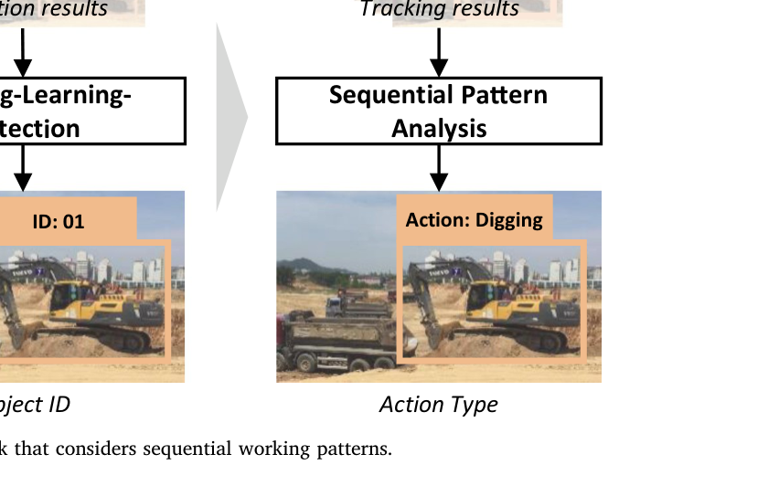
원문 Figure 2 · PDF p.4 — Fig. 2. Overview of the research framework that considers sequential working patterns.
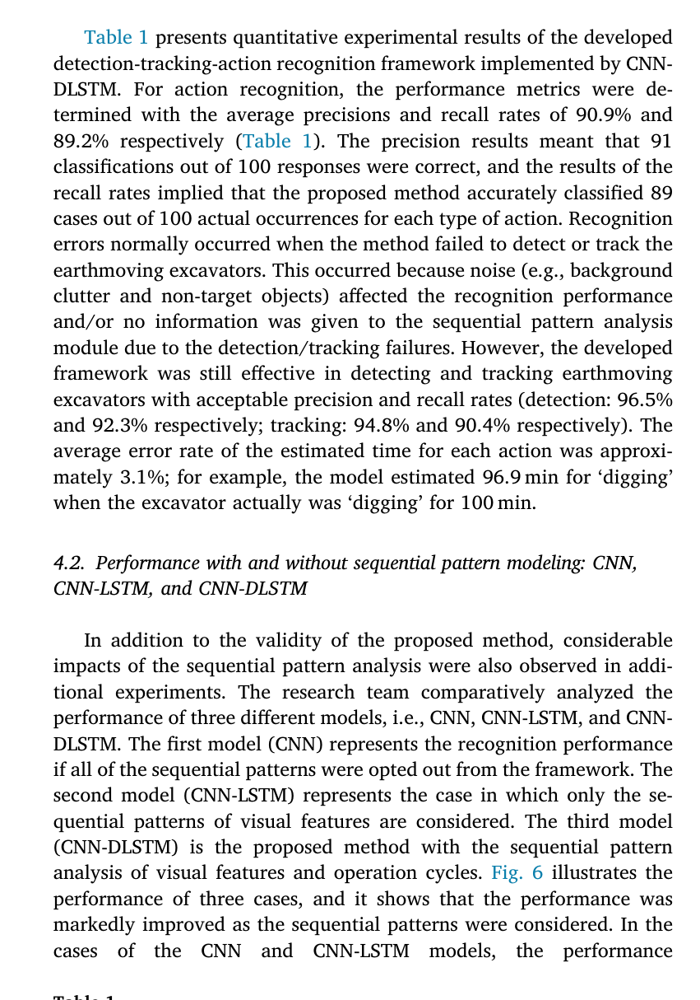
원문 Table 1 · PDF p.7 — Table 1 presents quantitative experimental results of the developed detection-tracking-action recognition framework implemented by CNN- DLSTM. For action recognition, the performance metrics were de- termined with the average precisions and recall rates of 90.9% and 89.2% respectively (Table 1). The precision results meant that 91 classifications out of 100 responses were correct, and the results of the recall rates implied that the proposed method accurately classified 89 cases out of 100 actual occurrences for each type of action. Recognition errors normally occurred when the method failed to detect or track the earthmoving excavators. This occurred because noise (e.g., background clutter and non-target objects) affected the recognition performance and/or no information was given to the sequential pattern analysis module due to the detection/tracking failures. However, the developed framework was still effective in detecting and tracking earthmoving excavators with acceptable precision and recall rates (detection: 96.5% and 92.3% respectively; tracking: 94.8% and 90.4% respectively). The average error rate of the estimated time for each action was approxi- mately 3.1%; for example, the model estimated 96.9 min for ‘digging’ when the excavator actually was ‘digging’ for 100 min.
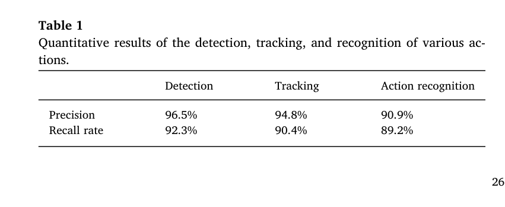
원문 Table 1 · PDF p.7 — Table 1 Quantitative results of the detection, tracking, and recognition of various ac- tions.